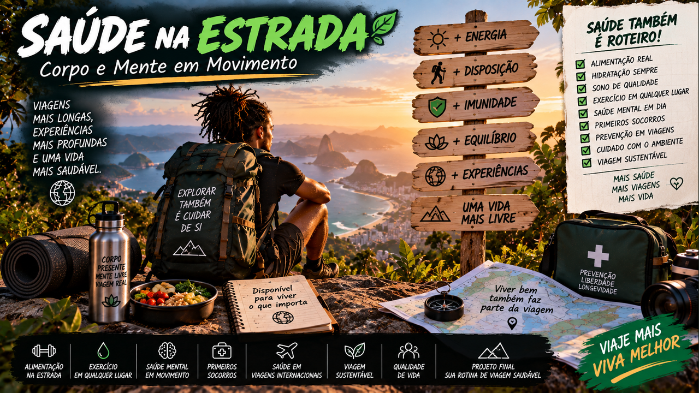

Corpo e Mente em Movimento — alimentação, sono, exercício, prevenção, saúde emocional e preparação para viajar com mais segurança e energia.
6 módulos24 aulasProjeto Minha Viagem Saudável
0 de 24 aulas concluídas
Viajar bem também é saber cuidar de si
Uma viagem incrível depende de um corpo que consegue acompanhar o caminho e de uma mente que encontra espaço para viver a experiência. Aqui você vai construir hábitos portáteis de alimentação, descanso, movimento, prevenção e equilíbrio — com informação educativa e sem substituir orientação profissional individual.

01
Saúde também faz parte do roteiro
Aprenda a preparar corpo e rotina para viajar com mais energia, segurança e autonomia.
Aula 01
Viajar muda sua rotina
Horários, alimentação, sono, clima e esforço físico mudam quando você viaja. Isso pode ser estimulante, mas também exige adaptação. Planejar saúde não significa tentar controlar tudo; significa reduzir problemas previsíveis.
Antes de uma viagem mais exigente, considere suas necessidades pessoais, medicamentos de uso contínuo e limitações conhecidas. Este curso é educativo e não substitui avaliação médica individual.
Atividade prática
Liste o que normalmente muda no seu sono, alimentação, hidratação e movimento quando você sai de casa.
Aula 02
Energia é recurso de viagem
Roteiros lotados podem transformar uma experiência desejada em exaustão. Deslocamentos, calor, trilhas e noites mal dormidas acumulam carga.
Intercale atividades intensas e leves. Deixar espaço no roteiro é uma estratégia de saúde e também melhora a capacidade de aproveitar o destino.
Atividade prática
Marque no seu próximo roteiro quais dias são intensos e onde haverá recuperação.
Aula 03
Conheça suas necessidades
Alergias, restrições alimentares, condições de saúde, acessibilidade e medicamentos podem exigir preparação específica. Quem viaja em grupo deve comunicar apenas o necessário para receber ajuda em emergência.
Para situações pessoais ou viagens com risco específico, procure orientação profissional antes de partir.
Atividade prática
Crie uma ficha privada com necessidades importantes, contatos e informações que você gostaria de ter acessíveis em emergência.
Aula 04
Plano de saúde da viagem
Pense em prevenção, rotina, acesso a atendimento e plano B. Descubra onde buscar ajuda no destino e quais coberturas você possui.
Em viagens internacionais, requisitos e recomendações podem variar conforme país, época e perfil do viajante. Consulte fontes oficiais atualizadas.
Atividade prática
Monte um checklist pré-viagem com saúde, documentos, cobertura e contatos.
Ferramenta do módulo — atualize seu Caderno de Saúde na Estrada com hábitos, prevenção e decisões para o roteiro.
02
Comer, beber e dormir na estrada
Proteja três fundamentos que influenciam energia, atenção e recuperação.
Aula 05
Hidratação prática
Necessidades de líquidos variam com clima, esforço, alimentação e pessoa. Tenha água disponível e observe sinais do próprio corpo, especialmente em calor ou atividade prolongada.
Em locais onde a qualidade da água é incerta, procure orientação confiável sobre fontes seguras. Não transforme metas genéricas de internet em regra médica individual.
Atividade prática
Planeje como terá acesso a água durante um dia inteiro de deslocamento.
Aula 06
Comida que sustenta a viagem
Viagem pode combinar culinária local com refeições simples e regulares. Inclua fontes variadas de alimentos e evite depender apenas de lanches ultraprocessados durante muitos dias.
Se possui alergias ou restrições, aprenda a comunicar isso no idioma local quando necessário e tenha opções seguras conhecidas.
Atividade prática
Monte três combinações simples de refeição que seriam fáceis de encontrar ou preparar viajando.
Aula 07
Segurança alimentar
Observe higiene, conservação, temperatura e procedência dos alimentos. Em ambientes quentes, itens perecíveis exigem atenção extra.
Se ocorrer doença gastrointestinal importante, especialmente com sinais de desidratação, sangue, febre alta ou piora significativa, procure avaliação profissional.
Atividade prática
Crie cinco critérios para escolher onde comer sem depender apenas da aparência do lugar.
Aula 08
Sono é parte do itinerário
Fuso, barulho, deslocamentos noturnos e excitação podem prejudicar o descanso. Horários relativamente consistentes, ambiente escuro e tempo para desacelerar ajudam muitas pessoas.
Evite planejar atividades críticas logo após noites sabidamente ruins. Sono insuficiente também afeta atenção e tomada de decisão.
Atividade prática
Inclua uma janela realista de sono em três dias de um roteiro fictício.
Ferramenta do módulo — atualize seu Caderno de Saúde na Estrada com hábitos, prevenção e decisões para o roteiro.
03
Movimento sem academia
Mantenha o corpo ativo sem transformar a viagem em programa de treinamento.
Aula 09
Caminhar já conta
Explorar a pé pode aumentar atividade física naturalmente. Aumente volume de caminhada gradualmente, principalmente se sua rotina habitual é sedentária.
Calçado confortável e pausas importam. Dor persistente ou intensa merece atenção, não heroísmo.
Atividade prática
Estime quanto você costuma caminhar e planeje progressão razoável para uma viagem.
Aula 10
Mobilidade em deslocamentos longos
Ficar muitas horas sentado pode causar desconforto. Quando for seguro e possível, faça pausas, mude de posição e movimente pernas e articulações.
Pessoas com risco médico específico para trombose precisam de orientação profissional individual antes de viagens prolongadas.
Atividade prática
Crie uma rotina curta de movimentos para pausas de uma viagem longa.
Aula 11
Força com o peso do corpo
Agachamentos adaptados, empurrar, puxar quando houver estrutura segura e exercícios de estabilidade podem manter uma rotina básica. A intensidade deve respeitar sua condição e experiência.
Viagem não é momento ideal para experimentar cargas ou movimentos arriscados sem preparo.
Atividade prática
Monte uma rotina simples de 15 minutos com exercícios que você já sabe executar corretamente.
Aula 12
Trilhas exigem preparação
Distância, desnível, altitude, calor e terreno mudam a exigência física. Pesquise a trilha e não use apenas quilômetros como medida de dificuldade.
Se a atividade ultrapassa claramente seu condicionamento, escolha alternativa ou prepare-se com antecedência.
Atividade prática
Compare duas trilhas usando distância, desnível, clima, terreno e duração.
Ferramenta do módulo — atualize seu Caderno de Saúde na Estrada com hábitos, prevenção e decisões para o roteiro.
04
Mente em movimento
Cuide de emoções, solidão, estímulo e limites enquanto conhece novos lugares.
Aula 13
Viagem não cura tudo
Mudar de cenário pode trazer prazer e perspectiva, mas não elimina automaticamente problemas emocionais. Expectativas irreais podem gerar frustração quando a experiência não corresponde às imagens idealizadas.
Permita dias comuns e emoções variadas. Viajar também é viver, não uma obrigação de felicidade constante.
Atividade prática
Escreva três expectativas da viagem e transforme cada uma em uma intenção mais flexível.
Aula 14
Solidão e conexão
Viajar sozinho pode ser libertador e também solitário. Atividades em grupo, hospedagens sociais, aulas e contatos regulares com pessoas próximas ajudam a construir conexão.
Respeite seu perfil: algumas pessoas precisam de mais convivência; outras precisam de tempo sozinhas para recuperar energia.
Atividade prática
Planeje duas formas de socializar e duas formas de ter espaço pessoal.
Aula 15
Sobrecarga e pausa
Muitos estímulos, decisões e deslocamentos podem cansar. Sinais como irritabilidade, dificuldade de concentração e vontade constante de cancelar planos podem indicar necessidade de descanso.
Reduzir o roteiro é uma decisão legítima. Se sofrimento emocional for intenso, persistente ou houver risco de segurança, busque apoio profissional ou serviço de emergência local.
Atividade prática
Crie seu Acesso Beta pessoal para um 'dia de recuperação' durante a viagem.
Aula 16
Presença sem performance
Você não precisa transformar cada lugar em conteúdo. Períodos sem câmera ou redes podem ajudar a perceber sons, pessoas e detalhes que passariam despercebidos.
Compartilhar depois, com calma, também reduz pressão de produzir enquanto vive.
Atividade prática
Escolha uma experiência da viagem que ficará completamente fora das redes sociais.
Ferramenta do módulo — atualize seu Caderno de Saúde na Estrada com hábitos, prevenção e decisões para o roteiro.
05
Prevenção e primeiros cuidados
Saiba preparar um kit básico, reconhecer limites e procurar ajuda quando necessário.
Aula 17
Kit de saúde pessoal
Monte um kit compatível com destino e necessidades pessoais: itens de higiene, curativos básicos e medicamentos que você já utiliza conforme orientação adequada. Transporte medicamentos de forma identificável e verifique regras quando cruzar fronteiras.
Não compartilhe medicamentos prescritos nem use antibióticos por conta própria.
Atividade prática
Faça a lista do seu kit e marque quais itens exigem receita ou documentação.
Aula 18
Sol, calor e frio
Roupas adequadas, sombra, proteção solar e planejamento de horários ajudam a reduzir exposição excessiva ao calor e radiação. Frio também exige camadas e proteção contra vento e umidade.
Sintomas intensos relacionados a temperatura exigem interrupção da atividade e, conforme gravidade, atendimento.
Atividade prática
Adapte a mesma mochila para um destino quente e outro frio.
Aula 19
Picadas e ambiente
Insetos e outros vetores variam por região. Barreiras físicas, roupas adequadas e repelentes registrados podem fazer parte da prevenção conforme o destino.
Recomendações sobre vacinas e doenças locais devem ser consultadas em fontes oficiais de saúde antes da viagem.
Atividade prática
Pesquise as recomendações oficiais de saúde para um destino que deseja conhecer.
Aula 20
Quando procurar ajuda
Dificuldade para respirar, alteração importante de consciência, sangramento grave, dor intensa súbita, sinais de AVC ou outras emergências exigem atendimento imediato. Em situações menos claras, serviços locais de saúde podem orientar.
Conhecer números e locais de emergência antes de precisar deles economiza tempo crítico.
Atividade prática
Salve no seu Acesso Beta o número de emergência e uma unidade de atendimento do destino.
Ferramenta do módulo — atualize seu Caderno de Saúde na Estrada com hábitos, prevenção e decisões para o roteiro.
06
Saúde em viagens longas e internacionais
Organize vacinas, seguro, medicamentos, fusos e acesso a atendimento.
Aula 21
Vacinas e recomendações oficiais
Alguns destinos possuem recomendações ou exigências específicas. Elas podem mudar com surtos e políticas sanitárias. Consulte Ministério da Saúde, Anvisa, OMS e autoridades do destino com antecedência.
Certificados podem precisar de formato específico. Não deixe essa pesquisa para o aeroporto.
Atividade prática
Escolha um destino internacional e registre quais fontes oficiais precisam ser consultadas.
Aula 22
Seguro e acesso a atendimento
Entenda cobertura, exclusões, franquia, rede e processo de reembolso antes de contratar um seguro. Guarde contatos e número da apólice acessíveis.
Seguro viagem não substitui prevenção nem garante cobertura para qualquer situação.
Atividade prática
Compare duas coberturas fictícias observando exclusões e limites, não apenas preço.
Aula 23
Medicamentos e fronteiras
Regras para transportar medicamentos variam entre países. Mantenha embalagem original quando apropriado e documentação necessária para medicamentos prescritos.
Confirme restrições oficiais do destino e de países de conexão, especialmente para substâncias controladas.
Atividade prática
Crie um checklist de documentação para medicamentos de uso contínuo.
Aula 24
Fuso e adaptação
Mudanças rápidas de horário podem afetar sono e disposição. Exposição à luz e ajuste gradual de horários podem ajudar em algumas situações, mas estratégias específicas dependem da viagem e da pessoa.
Reserve os primeiros dias para adaptação quando a diferença for grande.
Atividade prática
Planeje um primeiro dia leve depois de um voo com grande mudança de fuso.
Ferramenta do módulo — atualize seu Caderno de Saúde na Estrada com hábitos, prevenção e decisões para o roteiro.
🩺 Fontes oficiais para consultar antes de viajar
Recomendações sanitárias podem mudar conforme destino e momento. Consulte fontes oficiais perto da data da viagem.